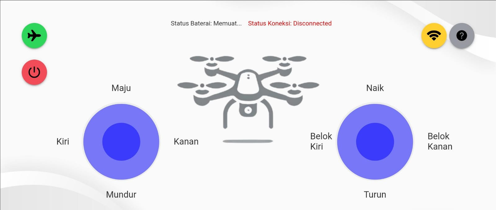

Tentang Aplikasi

DJI Tello adalah drone ringan, mudah digunakan, dan memiliki fitur canggih. Dengan Ionic Cordova, Anda bisa mengontrolnya langsung dari perangkat seluler dengan navigasi intuitif. Aplikasi Kontrol Drone DJI Tello yang kami buat merupakan solusi praktis dan efisien bagi para pengguna drone yang ingin mengendalikan DJI Tello secara langsung melalui perangkat seluler. Dibangun dengan menggunakan Ionic Framework dan Cordova, aplikasi ini memberikan antarmuka yang responsif dan mudah digunakan, memungkinkan pengguna untuk menikmati pengalaman terbang yang menyenangkan dengan hanya beberapa klik. Aplikasi ini menawarkan kontrol penuh atas drone yang lebih dari cukup untuk menikmati penerbangan drone yang stabil dan aman. Dengan desain yang sederhana dan navigasi yang intuitif, aplikasi ini cocok digunakan baik oleh pemula maupun pengguna berpengalaman yang ingin mengendalikan DJI Tello dengan cara yang lebih mudah dan efisien.